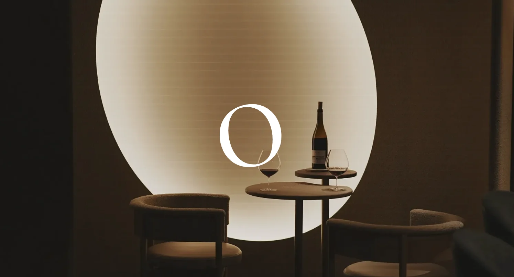
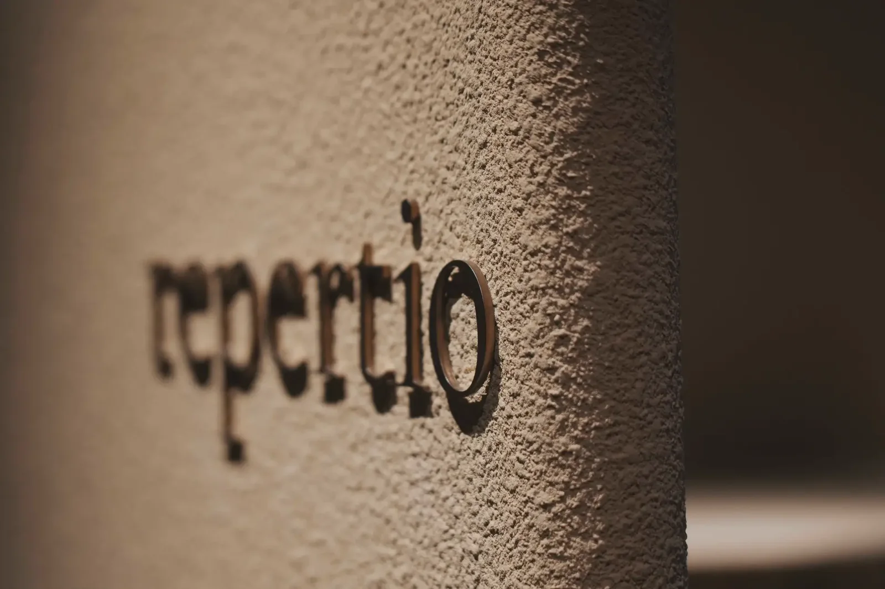
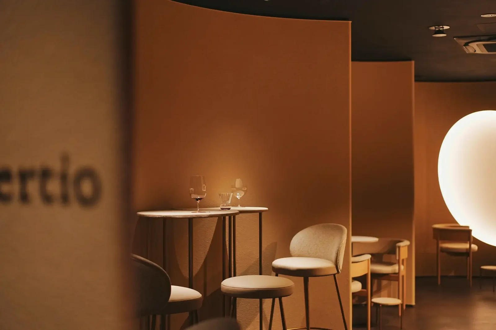
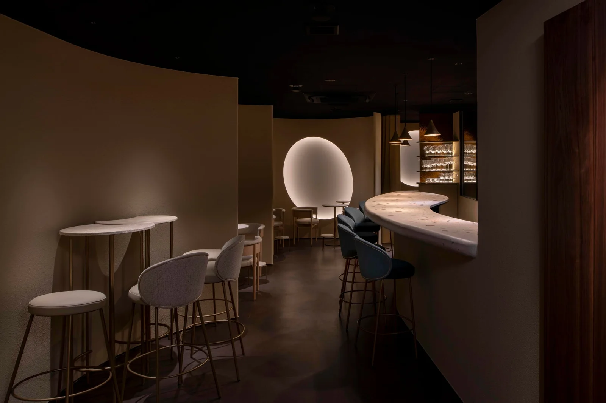

食・農 / 文化
repertio（レペルティオ）

麻布十番のワインバー「repertio」。「感覚を取り戻す場所」という店の考えを、ロゴからWebサイト、販促ツールまで一貫した表現に整えるアートディレクションを担当しました。
輪郭を与える
2026年5月、東京・麻布十番に開業したワインバーです。情報も、選択肢も、あまりにも多い時代。「何をよいと感じるのか」という自分の感覚に向き合う時間が、失われつつある。repertioは、その感覚を取り戻す場所として構想されました。ワイン、器、アート、空間。店を形づくるすべてを通して感覚に向き合うという考えを、訪れる前から感じられる表現へつなぐプロジェクトです。
全体を整える
SCHEMAはアートディレクションとして参加し、ロゴ、ブランドデザイン、Webサイト、販促ツールを担当しました（AD：岡永梨沙）。総合プロデュースはディターボの下田悠さん、クリエイティブディレクションはハガツサの千吉良美樹さん、空間設計は永山祐子建築設計、プロジェクトデザインはADDReC。器、アート、表具と、それぞれの分野のつくり手が集まったチームのなかで、店の世界観がひとつの声で伝わるよう、ことばとビジュアルの軸を整えています。
枠組みをひらく
銘柄や評価から選ぶのではなく、自分が心地よいと感じる時間からワインに出会う。その視点を、ロゴからWebまで一貫した表現で伝え、店を知る段階から体験への期待を育てています。入口のサインから、手にとるワインリストまで。空間と同じ温度で語りかけることを大事にしました。
THE PLACE
店について


ゆるやかな曲線と楕円が重なる空間は、永山祐子建築設計によるもの。シェアリングテーブル、カウンター、ラウンジ、個室が明確には仕切られず、「閉じているようで、開いている」つくりになっています。床や壁には、ワインを育てる大地を思わせる自然素材。テーブルは左官仕上げ、カウンターには天然石、ラウンジのテーブルには牡蠣の貝殻が使われています。
グラスの横に並ぶ器は、幸兵衛窯八代目・加藤亮太郎さんによる穴窯焼成の一点もの。ワインリストのカバーと展示アートは小川貴一郎さん、表具アートは井上光雅堂の井上雅博さん。ひとつの店のなかに、それぞれのつくり手の仕事が同じ呼吸で並んでいます。
東京都港区麻布十番2-5-3 AR10 6F／2026年5月7日開業

- 総合プロデュース
- 下田悠（株式会社ディターボ）
- クリエイティブディレクション
- 千吉良美樹（ハガツサ）
- アートディレクション
- 岡永梨沙（SCHEMA）
- 空間設計
- 永山祐子建築設計
- プロジェクトデザイン
- 福島大我（ADDReC）
- 陶芸
- 加藤亮太郎（幸兵衛窯八代目）
- ワインリストカバー・展示アート
- 小川貴一郎
- 表具アート
- 井上雅博（井上光雅堂）
- SNSマーケティング
- 小西裕佳子、齋藤由実（sow）